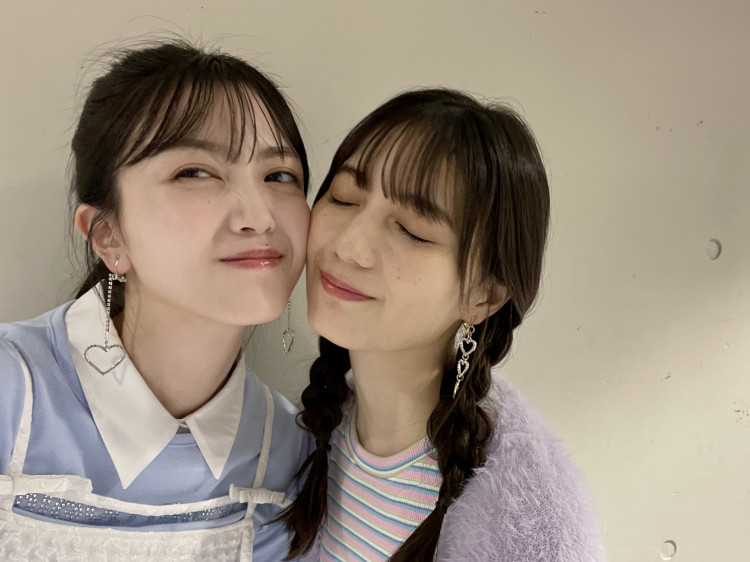

みなさんこんにちは。
久保史緒里です☺︎

少し前になりますが、『Seventeen夏の学園祭2023』ご来場、ご視聴いただき本当にありがとうございました！
読者の皆さんと直接会える学園祭はひさしぶりだったので、皆さんのお顔を見られたことが何より一番うれしかったです。
そして……まさか自分が学園祭のオープニングでランウェイに立つが来るとは思っていなかったので、それはもう、めっちゃ緊張しました！
これまで学園祭でトップを歩く先輩たちをずっと“カッコいいな”と見つめていたので、憧れの場所を小坂（菜緒）と二人で歩けたのもうれしかったな。
そんな相棒・小坂とは、当日に着てきた私服コーデがオールブラックで丸かぶり。会った瞬間、お互いに「絶対、黒で来ると思った～！」って言い合いました（笑）。


舞台裏では、ST㋲のみんなと交流！
“Wしおり”で一緒にランウェイを歩いた秋田汐梨ちゃんが、姉モのトークコーナーで“土屋太鳳さんのモノマネをする丸山礼さん”を、バッチリ決めてすごかったです。
私も丸山礼さんに舞台上で教えてもらって、姉モで披露できたのも楽しかったな。
ステージではいろいろな衣装を着たけど、特に浴衣が好評で、みんなに「可愛いね！」って言ってもらえました♡
舞台中（劇団☆新感線43周年興行・秋公演 いのうえ歌舞伎『天號星』）でお稽古から毎日浴衣を着ていたので、以前よりも着慣れていたのもあったのかも。
昨年の舞台で着つけを覚えて、大河ドラマ、今出演している舞台……と浴衣のご縁が続いています。
お稽古用の浴衣はシンプルなので、あんなにおしゃれで華やかな浴衣はひさしぶりでした！